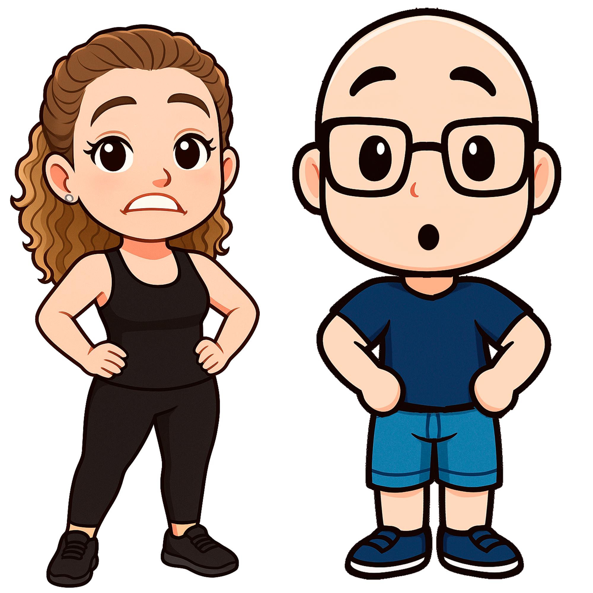

-.- Paracasa Paraca -.-

¡Peri, ven aquí, rápido! ¡Los gatos han decidido que la forma más *cool* de viajar es lanzándose de la azotea con paracaídas! El problema es que, después de tantos caprichos y galletas, ¡están más redondos que la luna llena!
Necesito tu ayuda. Tienes que atraparlos antes de que aterricen como panqueques. Usa el ratón o tu dedo para moverte de lado a lado y salvar a estos intrépidos, aunque gordos, aventureros. ¡Date prisa!
Nivel: 1
Vidas:
¡Oh no! No has logrado salvar a los gatos...